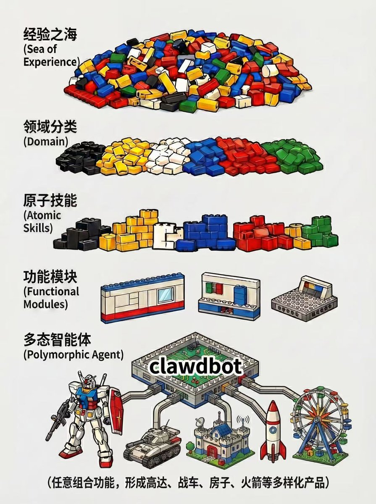

時璃風医詩🌈🏳️🌈
@hagishigure
知道是暴论就别发，发了就是让我骂你：弱智。
底层架构是不懂的，热度是要蹭的，脑子昨天是AIGC今天是AGI的。github一看比地铁的马赛克上色都少的，代码全是ai注释的，优化是没有的，乱序是不会的，连几个世纪前的基于分析机的循环概念都是没搞懂架构的。

Tz
@Tz_2022
我要暴论了。。。
我不是针对你，而是说在座的诸位，都大大低估了 clawdbot 的现实意义：
这是人类历史上第一次，把一个非人的灵魂装进一个壳子
Ghost in the Shell
clawdbot
- 将是通向 AGI 的一条可能通路
- 也是杀鸡用的那把牛刀
- 还是在 AI https://t.co/NEgNvIfSIf https://t.co/HEB6Y0gDL7